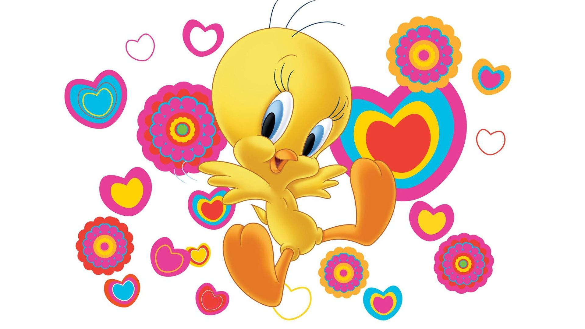

TWEETY
Titi (Tweety Bird ou Tweety Pie en version d'origine) est un personnage des Looney Tunes. Créé par Bob Clampett et Friz Freleng en 1942, ce petit canari jaune (mâle) est la proie préférée de Sylvestre le chat dit « Grosminet » (Sylvester en VO).
S'il semble fragile et sans défense, il n'en est pas moins très malin : il sait apitoyer ses amis, d'Hector le bouledogue à Mémé (Granny en VO) en jouant les victimes, bien qu'il soit assez malicieux pour se garder tout seul contre le « vilain rominet » (« bad old putty tat » en anglais), toujours perdant face à ce dernier.
Sa réplique la plus célèbre est « Z'ai cru voir un rominet » (« I tawt I taw a putty tat » (I thought I saw a pussy cat) en anglais). En effet, Titi, doublé depuis 1996 en français par l'actrice Patricia Legrand, zézaye1.
Son endroit préféré est sa cage dorée.
Identité et personnalité
Malgré ses longs cils et sa voix aigüe (que Mel Blanc fournit en version originale), Titi est un mâle. Dans le cartoon Qu'importe le flocon (Snow Business, 1953)2, quand Mémé entre dans une pièce où Titi et Grosminet sont installés, elle les appelle « Les garçons ! ». Son espèce est inconnue ; bien qu'il soit souvent dépeint comme un jeune canari, le mot « Titi » est parfois utilisé pour son espèce. Néanmoins, la chanson-titre de la série télévisée Titi et Grosminet mènent l'enquête (The Sylvester & Tweety Mysteries, 1995-2000) mentionne explicitement que l'oiseau est un canari. Sa forme suggère plus celle d'un bébé oiseau, qui est ce qu'il était lors de ses premières apparitions (bien que l'aspect « bébé oiseau » ait été utilisé dans quelques dessins plus tard). Les plumes jaunes ont été ajoutées, mais sinon il a conservé la forme de « bébé oiseau ».
Dans ses premières apparitions dans les dessins animés de Bob Clampett, Titi est un personnage très agressif qui fait tout pour déjouer les plans de son antagoniste, il peut même donner un coup de pied à un adversaire déjà perdant. Un de ses moments malveillants les plus notables est dans Titi la terreur (Birdy and the Beast, 1944). Un chat chasse Titi en « volant » jusqu'à ce qu'il se souvienne que les chats ne peuvent pas voler, ce qui le fait tomber. Titi dit joliment : « Oh, le pauvre minet ! ». Lorsque le chat atterrit sur le sol, avec une voix masculine grave, Titi dit « BOOM ! » et sourit alors malicieusement. Une utilisation similaire de cette voix est dans Histoire de chatons (A Tale of Two Kitties, 1942) quand Titi, portant un casque de gardien de raid aérien, crie soudainement aux deux chats :« Extinction des feux ! ». Titi a été adouci lorsque Friz Freleng a commencé à diriger les dessins animés de l'oiseau, et encore plus quand Mémé a été introduite, mais parfois Titi montre encore son côté malveillant.